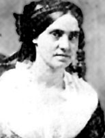

|

|

|
|
|
Born August 18, 1823 in Charleston, South Carolina, Phoebe
Yates Levy Pember became a Civil War hospital administrator
and a writer.
Pember was the fourth of seven children to prosperous
Jews Fanny Yates and Jacob Levy. In the 1850s, the family
moved from Charleston to Savannah, Georgia where they stayed
until 1862 when they moved to Marietta, Georgia to escape
the hardships of the war. Before the Civil War, Phoebe
married Bostonian Thomas Pember. After he died (July 1861)
in Aiken, South Carolina, Pember returned to her family.
Pember's connections to the Southern elite led to a
November 1862, offer to become chief matron of a division of
Richmond's Chimborazo Hospital. This position made Pember
the first female administrator at Chimborazo. As head of
the second division (Hospital No. 2) Pember oversaw
patients' care as well as housekeeping, supplies, and staff
issues. She did little medical work, although during
emergencies she occasionally dressed wounds. Pember's sex
made her job difficult. Male physicians often interfered
with her and she endured insults. Pember also had to
struggle effectively to manage the hospital with inadequate
supplies.
Pember remained a matron of Chimborazo until after Union
officials took charge. During this chaotic period, she did
whatever she could to help her patients. She refused to
leave the hospital until her remaining patients had died or
recovered.
After the Civil War, Pember recorded her experiences at
Chimborazo in her memoirs, A Southern Woman's Story.
In this book, she recounted her difficulties as a hospital
matron as well as harsh living conditions in Richmond,
wartime inflation, and the dangers of wartime travel. She
also painted a portrait of the soldiers who fought for the
Confederacy.
Pember returned to Georgia after the Civil War. In later
years, she traveled throughout the United States and died in
Pittsburgh on March 4, 1913. She was buried in Savannah.
Source: Joan Waugh, ed., Facts on File Encyclopedia of American
History: Civil War and Reconstruction, 1856 to 1869 (New York: Facts on
File, 2003). 266-267.
|